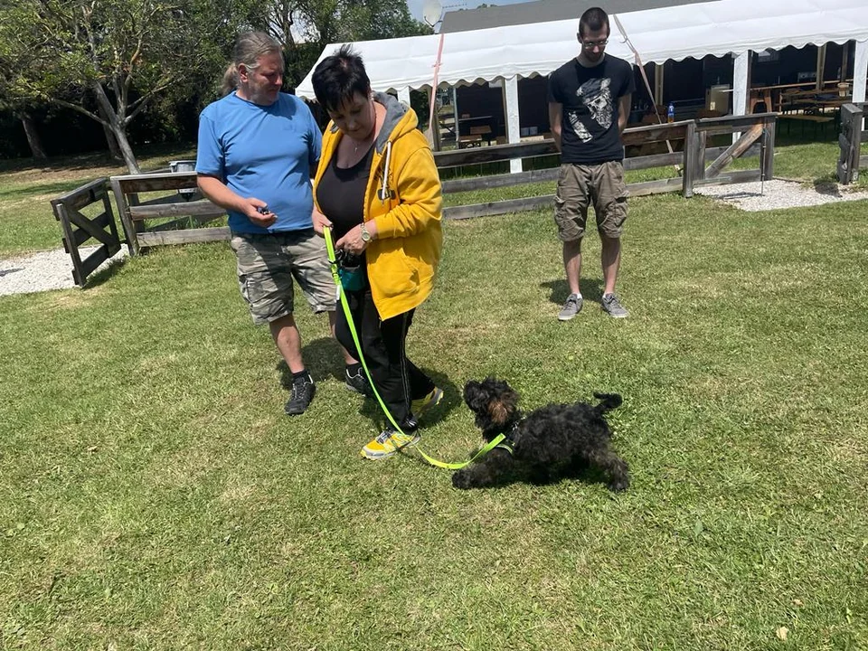

Was euch erwartet
Die ersten Lebenswochen und Monate prägen deinen Hund besonders stark. Bei uns lernen die Kleinen, neue Situationen und Aufgaben gelassen anzugehen. Auch du lernst deinen Vierbeiner besser kennen und seine Körpersprache zu verstehen.
Das lernen wir gemeinsam
Mit gemeinsamen Spielen und Vertrauensübungen stärken wir eure Bindung.
Im Bällebad, auf unterschiedlichen Untergründen und an weiteren Trainingsgeräten entdecken die Welpen spielerisch ihre Umwelt. So können sie Selbstvertrauen und Geschicklichkeit entwickeln und sich an Unbekanntes gewöhnen.
Wir üben die ersten Signale Sitz, Platz und Fuß sowie den Rückruf, auch wenn Ablenkungen dazukommen. Die Leinenführigkeit gehört ebenfalls dazu.
Zum Kursabschluss besteht die Möglichkeit, an einer Junghundeveranlagung teilzunehmen.
Was du mitbringen solltest
- Halsband oder Brustgeschirr
- Eine verstellbare Leine, bitte ohne Flexileine
- Reichlich kleine, weiche Leckerlis, die schnell geschluckt werden können
- Das Lieblingsspielzeug für gemeinsames Spielen, etwa ein Zergelspielzeug statt eines Balls
- Freude und Geduld beim Üben
Mittwoch, etwa 50 Minuten. Die genaue Uhrzeit bitte vor dem Besuch erfragen.
Unsere jungen Hunde im Training
Einblicke aus unserem Vereinsarchiv.


Weitere Kurse entdecken
Finde das passende Angebot für dich und deinen Hund.